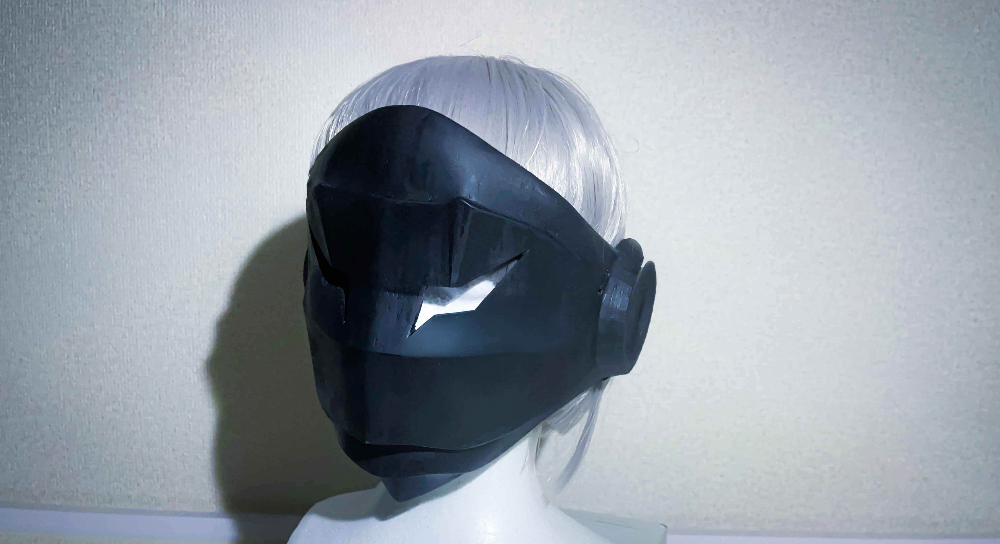
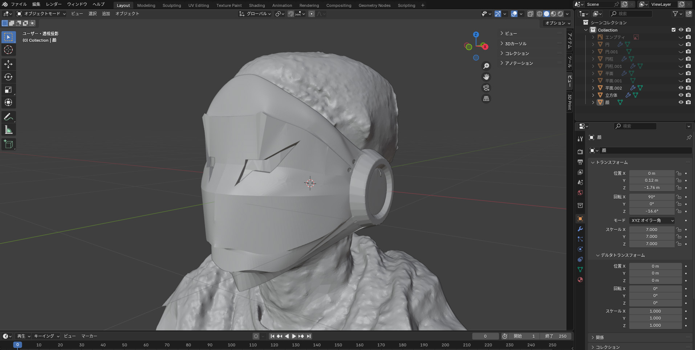
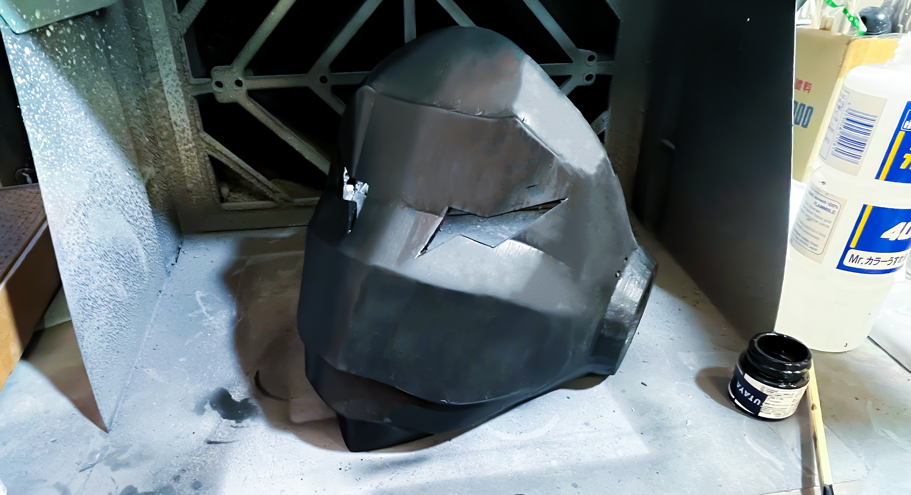

01. 概要
サークルでのコスプレ活動において、自身が着用する小道具としてのフルフェイスマスクを制作。Blenderを用いた三次元空間上での形状調整から、3Dプリンター（Adventurer4）を用いた出力、エアブラシ塗装による表面処理までの一連の工程を経験したプロジェクトです。
02. 設計プロセスと三次元検証
自身の顔メッシュを基準とした形状調整
自身が確実に着用できる密着性と快適性を両立させるため、スマホアプリを用いて自分の顔を三次元スキャンし、頭部メッシュデータとしてBlenderにインポート。このデータを基準に、マスクの裏面構造が顔と干渉しないようミリ単位で形状を調整しました。試作を繰り返すことなく、デジタル空間上で装着時の隙間を計算・最適化しています。
Blenderの習熟を兼ねた構造設計
寸法の正確な測定や出力用データの設計においてはCADを用いるのが効率的ですが、本プロジェクトでは3DCGツールであるBlenderのモデリング技術習熟も目的として設定。外見の意匠性を追求しつつ、3Dプリンターで出力する際の積層方向の考慮、サポート材を減らすためのパーツ分割、強度を保つための肉厚の均一化など、製造上の制約を考慮したデータ作成を行いました。

// 三次元検証：顔データとマスク構造の適合および隙間の最適化
03. 物理出力と質感表現
3Dプリンターによる実物出力
設計したデータをスライサーソフト（FlashPrint）にインポートし、充填率や積層ピッチを最適化して3Dプリンター（Adventurer4）で出力。データ通りの正確な造形物を得るための設定調整を行いました。
質感を制御する後加工とエアブラシ塗装
出力品特有の積層痕を消去するため、サンドペーパーでの研磨とパテ・サフェーサーによる表面処理を反復。凹凸を平滑にした後、エアブラシを用いて独自のカラーリングを施しました。デジタル空間で作成した形状を、素材の特性を活かしながら物理世界に物質化させるプロセスを実践しました。

// 製造プロセス：積層痕の研磨処理とエアブラシを用いた表面質感の調整